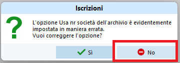
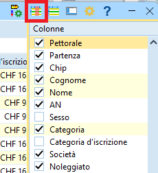
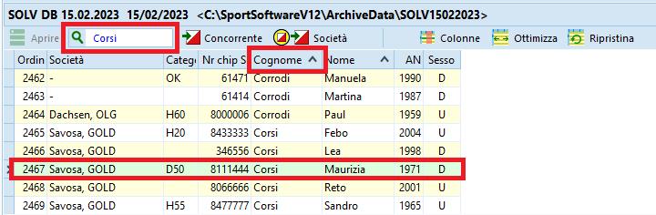
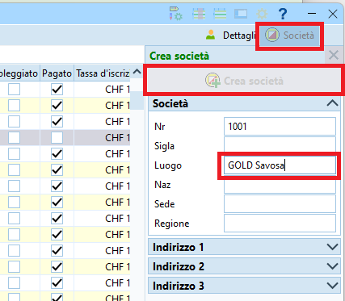
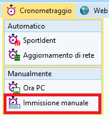
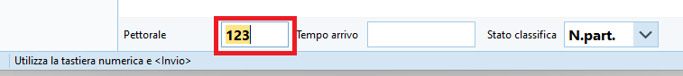
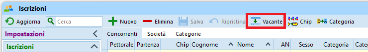

Iscrizioni e mutazioni sul posto¶
Questa sezione descrive le iscrizioni sul posto e le mutazioni effettuate il giorno di gara.
Per le iscrizioni e le mutazioni pervenute prima della creazione delle liste di partenza, vedi Iscrizioni tardive.
Attenzione
In OE12 è cambiata la gestione degli indirizzi, importante per l'inserimento del domicilio.
Anche l'importazione di società dall'archivio come pure la creazione di nuove società è cambiato.
Di base viene stampato un numero limitato di cartine, corrispondente agli iscritti più i vacanti previsti durante la creazione delle liste di partenza. Quindi il giorno di gara non vengono mai aggiunte iscrizioni, bensì unicamente sostituiti dei vacanti oppure dei concorrenti assenti
Nota: sebbene OL-Einzel abbia una funzionalità chiamata Iscrizioni sul posto, usiamo sempre solo la funzionalità generica di Iscrizioni.

Nota: aprendo la finestra delle iscrizioni appare sempre il seguente avvertimento errato, al quale è importante rispondere sempre No.

Controllo impostazioni¶
Controlla le impostazioni e configura la finestra delle iscrizioni
- Nel menu
IscrizioniselezionaModifica > Iscrizioni -
Controlla le impostazioni come da immagine

-
Nota su
Utilizza tassa d'iscrizione 2eAggiungere sovratassa
Secondo le disposizioni del Tariffario del RECO, la sovratassa per le mutazioni (nome e/o categoria) e le iscrizioni tardive o sul posto ammonta a 5.- Fr., escluse le categorie HB, DB e OK.
Tuttavia, il RECO specifica pure che il supplemento per le iscrizioni sul posto [...] non può essere aggiunto sulla fattura alle società.
Quindi, per poter generare in OE12 delle fatture corrette dopo la gara, almeno per i concorrenti di società ticinesi la tassa d'iscrizione deve rimanere quella normale, e il supplemento va incassato separatamente dal concorrente, ad esempio il giorno di gara.
Dal punto di vista delle impostazioni, le due opzioni in questione non vengono perciò utilizzate e non vanno selezionate. -
Nota sulle impostazioni dell'archivio
Le impostazioni mostrate permettono la ripresa di tutti i dati di un concorrente inserendo unicamente il suo numero chip.
È tuttavia importante cheTUTTEle impostazioni archivio siano come indicate nell'immagine.
-
-
Ottimizza la tabella
Vedi Personalizzazione delle tabelle per dettagli sulla gestione dell'interfaccia grafica.-
Seleziona le colonne rilevanti
Nota: puoi selezionare le colonne premendo sull'iconacolonnein alto a destra.
 -
Ordina le colonne
Nota: puoi spostare le colonne semplicemente trascinando l'intestazione delle varie colonne e ridimensionarle trascinando il bordo di separazione tra due intestazioni. -
È consigliato l'utilizzo delle seguenti colonne
Nota: attiva le colonnePettoraleePartenzae disattivaBloccoche non serve il giorno di gara.
Nota importante: disattivaOrdine d'inserimentoin quanto può creare confusione con il pettorale e portare a errori.- Pettorale
- Partenza
- Categoria
- Chip
- Noleggiato
- Cognome
- Nome
- Anno
- Società
- Indirizzo
- Tassa d'iscrizione
- Pagato
-
Iscrizione sul posto¶
Normalmente, i concorrenti che si iscrivono sul posto prendono il pettorale e l'orario di partenza di un vacante della propria categoria.
- Nel menu
IscrizioniselezionaModifica > Iscrizioni.
Nota importante: non selezionareIscrizioni sul postodal menu. -
Trova il vacante
Nota: ci sono vari modi per trovare il vacante da sostituire-
Ordina i concorrenti per pettorale premendo sull'intestazione della colonna
Pettoralee cerca per numero
-
Ordina per orario di partenza premendo sull'intestazione della colonna
Partenzae cerca per orario -
Ordina per orario di partenza e raggruppa per categoria nel menu in alto a destra

Aprendo sempre una sola categoria per volta dovrebbe risultare abbastanza veloce trovare il vacante cercato.

-
-
Controlla il numero di pettorale, orario di partenza e categoria
- Inserisci il numero del chip e premi
TAB(il tasto tabulatore per spostarti sul prossimo campo).
Il programma cerca il numero chip nell'archivio.- Se il chip viene trovato nell'archivio, vengono automaticamente ripresi i dati del concorrente.
Controlla comunque sempre che il nome del concorrente, la società e il domicilio corrispondano ed eventualmente correggi. - Se il chip non è presente nell'archivio, il programma reclama.
Prova a cercare il concorrente nell'archivio per nome.
Nota: riprendendo i dati di un concorrente dall'archivio vengono mantenuti molti più dati di quelli inseriti manualmente nella tabella, come per esempio l'ID della banca dati SOLV. È quindi buona pratica cercare prima nell'archivio in modo da importare anche i dati supplementari.
- Apri l'archivio premendo sul pannello in basso
- Ordina per
Cognome - Cerca inserendo il cognome nel campo di ricerca
- Doppio click sul concorrente, e tutti i suoi dati verranno ripresi in quello che stai inserendo.
Nota: in alternativa al doppio click puoi anche selezionare il bottoneConcorrentein alto a destra del campo di ricerca.
- Se il concorrente non è presente nell'archivio bisogna inserire tutti i dati manualmente.
Inserisci i campiCognome,NomeeAN(anno di nascita)
Nota: per concorrenti che corrono in coppia, inserire i cognomi e i nomi separandoli con+(ad es.Heidi + Peter). Il RECO infatti richiede che si riconosca chiaramente chi corre in coppia, dato che non valgono per le classifiche annuali del TMO.
Nota: non ci sono direttive riguardo a quale anno di nascita usare, ma per la tassa d'iscrizione fa stato il concorrente più anziano.- Il campo
Indirizzonon è editabile. Per le liste di partenza e le classifiche sul sito SOLV serve unicamente il domicilio. Premere suDettagliin alto a destra per mostrare la sezioneIndirizzosulla destra con i singoli campi editabili.
Nota: il campoIndirizzonella tabella verrà aggiornato con i nuovi valori solo quando salvi l'iscrizione.

- Se il chip viene trovato nell'archivio, vengono automaticamente ripresi i dati del concorrente.
- Seleziona la
società
La tendina contiene le società già presenti nella gara.- Seleziona la società del concorrente se è presente nella tendina
- Se la società non è ancora presente nella gara (quindi nella tendina di selezione delle società)

- Apri l'archivio premendo sul pannello in basso
- Ordina per
Società - Cerca inserendo il nome della società (di solito il comune e non la sigla)
- Seleziona il primo concorrente della società
- Premi
Inserisci nuova società dall'archivio - Assegna la società al concorrente che stai iscrivendo
- Se la società non è presente nell'archivio
- Premi su
Societàin alto a destra per mostrare la sezioneSocietàsulla destra - Premi su
Crea società - Inserisci nel campo
Luogotutto il nome della società, lasciando quindi vuoto il campoSigla. - Lascia il numero di società generato automaticamente
Nota: il campoSocietànella tabella verrà aggiornato con la nuova società solo quando salvi l'iscrizione.
- Premi su
- Imposta il campo
Noleggiatose il chip è stato noleggiato.
Alla lettura chip apparirà un relativo messaggio, permettendo il ritiro del chip.
Nota: utilizza la barra spaziatrice per selezionare e deselezionare il campo. - Controlla la
Tassa d'iscrizionee imposta il campoPagato.
Nota: secondo il RECO la sovratassa di 5.- Franchi per le iscrizioni tardive va pagata dal concorrente e non è permesso fatturare la sovratassa alle società ticinesi. Quindi per i concorrenti ticinesi la tassa d'iscrizione deve corrispondere a quella normale usata per le iscrizioni e la sovratassa va gestita manualmente. Per i concorrenti di società non ticinesi, è possibile invece aggiungere la sovratassa direttamente nel campotassa d'iscrizionein modo da ottenere poi delle fatture corrette da spedire o da presentare ai concorrenti il giorno di gara.
Nota: se un concorrente paga una parte (ad esempio il noleggio chip oppure la sovratassa), inserisci nel campo della tassa solo la quota ancora da pagare e non selezionare il campoPagato. In questo modo la fattura che verrà inviata alla società sarà corretta. La contabilità delle sovratasse va invece gestita separatamente e esternamente a OE. - Salva l'iscrizione premendo
Entero premendo sull'icona del dischetto in alto a sinistra.
Nota: PremiEscper annullare le modifiche / l'inserimento del nuovo concorrente.
Mutazione concorrente¶
Cambiamenti dei dati di un concorrente (ad esempio il numero del chip, il domicilio, la società o il cognome) dovrebbero venir eseguiti dal concorrente stesso aggiornando i suoi dati nella banca dati SOLV.
Le mutazioni effettuate in OL-Einzel seguendo la procedura qui descritta valgono unicamente per la gara in corso. Al prossimo TMO saranno ancora errati.
- Nel menu
IscrizioniselezionaModifica > Iscrizioni - Ordina i concorrenti per nome cliccando sull'intestazione della colonna
Cognome - Inserisci il cognome del concorrente nel campo di ricerca
- Modifica i campi
- Premi
Enterper salvare oEscper annullare la modifica
Disiscrizione di un assente¶
Per disiscrivere un concorrente assente, marcalo come non partito.
Nota: evita di mettere il concorrente a vacante in quanto un concorrente iscritto che poi non si presenta è tenuto a pagare la tassa d'iscrizione. Trasformandolo in vacante non figurerà più nelle iscrizioni e quindi nelle fatture spedite alle società.
Nota: dalla partenza riceverai la lista dei concorrenti non partiti, per cui potresti anche ignorare questo caso prima della gara. Importante è la gestione all'info, per eventualmente poter rivendere il posto ad un altro concorrente.
-
Se sai il numero di pettorale del concorrente
-
Nel menu
CronometraggioselezionaManualmente > Immissione manuale
 -
Annulla la finestra di stampa
- Imposta nel pannello a sinistra
Valutazione rapidaaNessuno -
Imposta lo stato di classifica in basso a destra a
N.Part.
-
Per ogni concorrente non partito
-
Inserisci il numero di pettorale e premi
Enter.
 -
Verifica sempre che il nome che appare nella lista corrisponda a quello del concorrente non partito
-
-
-
Altrimenti, se non sai il numero di pettorale del concorrente
- Nel menu
Giorno di garaselezionaElabora chip

- Ordina i concorrenti per nome cliccando sull'intestazione della colonna
Cognome - Inserisci il cognome del concorrente nel campo di ricerca
- Cambia lo stato a
Non partito - Premi
Enterper salvare oEscper annullare la modifica

- Nel menu
Sostituzione concorrente¶
Sostituire un concorrente assente con un altro concorrente.
Nota: se i due concorrent sono della stessa società, il RECO prevede unicamente il pagamento della sovratassa. Mentre se il nuovo concorrente è di una società diversa, tenere conto che il concorrente assente è tenuto al pagamento della tassa d'iscrizione, ma non figurerà più nelle fatture generate dopo la gara.
- Nel menu
IscrizioniselezionaModifica > Iscrizioni - Trova il concorrente (analogamente alla ricerca del vacante in Iscrizione sul posto)
Ad esempio- Ordina i concorrenti per nome cliccando sull'intestazione della colonna
Cognome - Inserisci il cognome del concorrente assente nel campo di ricerca
- Ordina i concorrenti per nome cliccando sull'intestazione della colonna
- Trasforma il concorrente assente in vacante premendo sull'aposito bottone.
Nota: così facendo cancelli tutti i suoi dati, anche quelli non visibili nella tabella.
 - Iscrivi il nuovo concorrente analogamente all'Iscrizione sul posto
Scambio concorrenti¶
Di base i campi categoria, pettorale e orario di partenza formano una tripletta immutabile. Lo scambio di due concorrenti si risolve quindi nello scambio delle relative "triplette" di dati.
- Trova il primo concorrente.
Nota: tieni nota dei dati del primo concorrente.- Assegnagli la nuova categoria (quella del secondo concorrente).
- Assegnagli il nuovo orario di partenza (quello del secondo concorrente).
- Assegnagli un numero di pettorale fittizio.
Nota: i numeri di pettorale devono sempre essere univoci. Non è pertanto possibile assegnare lo stesso pettorale a due concorrenti, nemmeno temporaneamente.
Consiglio: assegnagli il numero di pettorale nuovo (quello del secondo concorrente) + 9000.
- Trova il secondo concorrente
- Assegnagli la nuova categoria (quella originale del primo concorrente).
- Assegnagli il nuovo orario di partenza (quello originale del primo concorrente).
- Assegnagli il nuovo numero di pettorale (quello originale del primo concorrente).
- Trova il primo concorrente
- Correggi il numero di pettorale (togli 9000)
Nota: questa procedura funziona anche se uno dei due concorrenti è un Vacante.
Cambio orario partenza¶
In generale non è possibile semplicemente cambiare l'orario di partenza di un concorrente, in quanto si rischierebbe di non rispettare le regole di partenza.
Il cambio di orario di partenza è spesso uno scambio tra due concorrenti (di cui uno eventualmente è un vacante) e va quindi gestito come descritto in Scambio concorrenti.
Se tuttavia si vuole assegnare un nuovo orario di partenza ad un concorrente, e questo orario di partenza rispetta le regole e non è già utilizzato da altri concorrenti della stessa categoria (inclusi quindi i vacanti), basta sovrascrivere il relativo campo.
Cambio categoria¶
Non è possibile semplicemente cambiare la categoria di un concorrente, in quanto si rischierebbe di non avere abbastanza cartine alla partenza, e le regole di partenza non sarebbero rispettate.
Il cambio di categoria è perciò sempre uno scambio tra due concorrenti (di cui uno eventualmente è un vacante) e va quindi gestito come descritto in Scambio concorrenti.